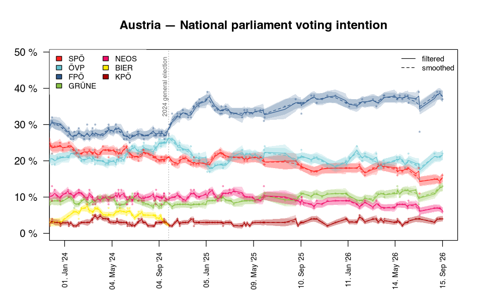
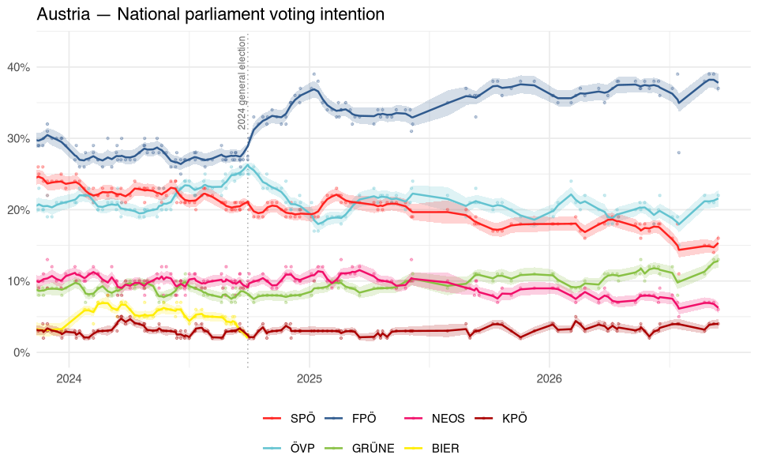
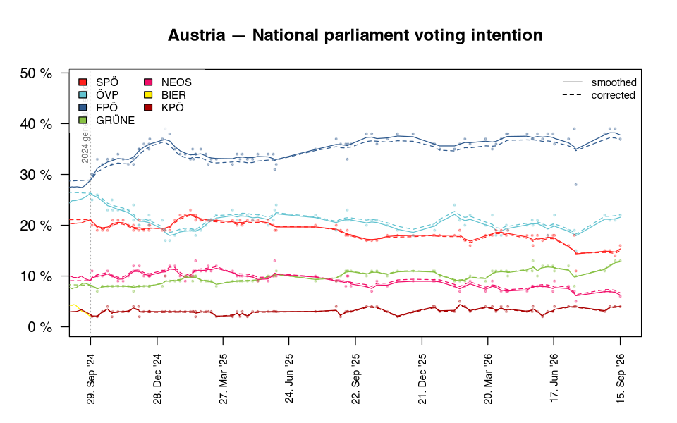
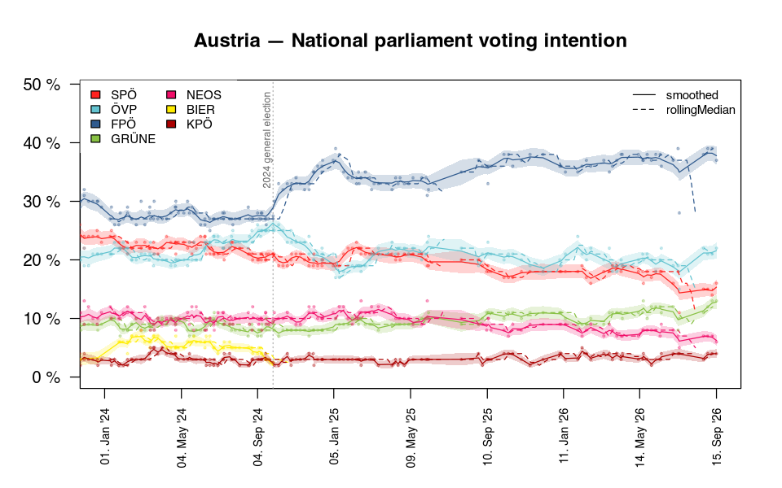

This article walks through a typical session with the Austrian national parliament polls. Everything works the same way for every other poll published by POLITICO’s Poll of Polls. The output below was generated with the data published on 2026-10-09.
Reading polls
popGetInfo() lists the available polls. It visits every
country page once and caches the result for a day, so the first call
takes a while.
popRead() downloads a poll. The result is a
popPolls object, a list of data.tables: one
row per poll in $polls, election results in
$elections, party codes, names and colours in
$parties and the trends POLITICO publishes in
$trends.
at = popRead('AT-parliament')
at
#> Austria — National parliament voting intention
#> Retrieved: 2026-10-09 20:07
#>
#> Polls:
#>
#> date dateFrom firm firmRaw n SPOE OEVP
#> <Date> <Date> <char> <char> <int> <num> <num>
#> 2013-10-03 2013-10-03 Gallup Gallup 400 0.28 0.23
#> 2013-10-17 2013-10-17 Gallup Gallup 400 0.28 0.23
#> 2013-10-20 2013-10-20 Market Market 603 0.25 0.23
#> 2013-10-25 2013-10-25 Gallup Gallup 400 0.27 0.24
#> 2013-10-26 2013-10-26 Karmasin Karmasin 500 0.26 0.23
#> --- --- --- --- --- --- ---
#> 2026-07-17 2026-07-15 IFDD IFDD 1000 0.11 0.15
#> 2026-08-25 2026-08-17 Market/Lazarsfeld Market Lazarsfeld 2000 0.15 0.22
#> 2026-09-01 2026-08-31 Market/Lazarsfeld Market Lazarsfeld 2000 0.15 0.21
#> 2026-09-08 2026-09-07 Market/Lazarsfeld Market Lazarsfeld 2000 0.14 0.21
#> 2026-09-15 2026-09-14 Market/Lazarsfeld Market Lazarsfeld 2000 0.16 0.22
#> FPOE GRUENE TS NEOS Jetzt HCS MFG BIER KPOE
#> <num> <num> <num> <num> <num> <num> <num> <num> <num>
#> 0.21 0.13 NA 0.07 NA NA NA NA NA
#> 0.22 0.13 NA 0.08 NA NA NA NA NA
#> 0.25 0.12 NA 0.07 NA NA NA NA NA
#> 0.22 0.13 NA 0.08 NA NA NA NA NA
#> 0.23 0.12 NA 0.08 NA NA NA NA NA
#> --- --- --- --- --- --- --- --- ---
#> 0.28 0.10 NA 0.05 NA NA NA NA 0.04
#> 0.38 0.11 NA 0.07 NA NA NA NA 0.03
#> 0.39 0.12 NA 0.07 NA NA NA NA 0.04
#> 0.39 0.13 NA 0.07 NA NA NA NA 0.04
#> 0.37 0.13 NA 0.06 NA NA NA NA 0.04
#>
#> Elections: 2013-09-29 2017-10-15 2019-09-29 2024-09-29
#> Trends: kalmanSmooth, kalman
#> Events: 12
at$parties
#> code name color
#> <char> <char> <char>
#> 1: SPOE SPÖ #FF221F
#> 2: OEVP ÖVP #63c3d0
#> 3: FPOE FPÖ #2F5A8E
#> 4: GRUENE GRÜNE #88C144
#> 5: TS Team Stronach #facd50
#> 6: NEOS NEOS #F10E69
#> 7: Jetzt Jetzt #bbbbbb
#> 8: HCS HC #4a9dd9
#> 9: MFG MFG #6e706e
#> 10: BIER BIER #FFED00
#> 11: KPOE KPÖ #aa0000Shares are stored as fractions (0.27 = 27 %), seat
projections such as NL-parliament as absolute numbers.
Trends
popAddTrend() adds a poll aggregation. The default is a
Kalman filter, which treats the true support of a party as a random walk
and every poll as a noisy measurement of it, weighted by its sample
size. sd is the daily standard deviation of the random
walk: larger values follow the polls more closely.
The filter only looks back in time. With
smoothing = TRUE, every estimate also takes the later polls
into account, which removes the lag behind sudden changes. The estimates
are calculated for the dates with polls;
linearInterpolation turns them into a daily series.
at = popAddTrend(at, name = 'filtered', type = 'kalman', args = list(sd = 0.003))
at = popAddTrend(at, name = 'smoothed', type = 'kalman',
args = list(sd = 0.003, smoothing = TRUE),
interpolations = list(linearInterpolation = list()))
names(at$trends)
#> [1] "kalmanSmooth" "kalman" "filtered" "smoothed"The smoothed trend is the method behind POLITICO’s own
kalmanSmooth trend:
both = merge(at$trends$smoothed, at$trends$kalmanSmooth, by = c('date', 'party'))
both[, .(days = uniqueN(date), meanAbsDifference = mean(abs(value.x - value.y)))]
#> days meanAbsDifference
#> <int> <num>
#> 1: 4735 0.0005200412plot() draws the polls as points and every trend as a
line. Trends with a variance, such as the Kalman trends, come with a 95
% uncertainty band. Dotted lines mark the events POLITICO notes in its
charts, such as elections.

plot of chunk unnamed-chunk-7
ggplot2
autoplot() draws the same with ggplot2 and returns an
ordinary ggplot object, so layers, scales and themes can be added as
usual.
library(ggplot2)
at$trends$filtered = NULL
autoplot(at, xlim = c('2024-01-01', NA), level = 0.9) +
theme_minimal() +
theme(legend.position = 'bottom')
plot of chunk unnamed-chunk-8
For anything else, popLong() returns polls, election
results and trends in long format:
popLong(at)
popLong(at, 'trends')
#> trend date party value variance
#> <char> <Date> <char> <num> <num>
#> 1: smoothed 2013-09-29 SPOE 0.26820000 0.000000e+00
#> 2: smoothed 2013-09-29 OEVP 0.23990000 0.000000e+00
#> 3: smoothed 2013-09-29 FPOE 0.20510000 0.000000e+00
#> 4: smoothed 2013-09-29 GRUENE 0.12420000 0.000000e+00
#> 5: smoothed 2013-09-29 TS 0.05730000 0.000000e+00
#> ---
#> 28541: smoothed 2026-09-15 OEVP 0.21578371 4.840253e-05
#> 28542: smoothed 2026-09-15 FPOE 0.37785585 6.035729e-05
#> 28543: smoothed 2026-09-15 GRUENE 0.12816831 3.597781e-05
#> 28544: smoothed 2026-09-15 NEOS 0.06244160 2.127859e-05
#> 28545: smoothed 2026-09-15 KPOE 0.03992564 1.542379e-05Current standings, seats and coalitions
popLatest() summarises a trend (by default the one added
last) at a date: the estimated support, its uncertainty, the change over
the last 30 days and the result of the last election.
popLatest(at)
#> party name date value lower upper change
#> <char> <char> <Date> <num> <num> <num> <num>
#> 1: FPOE FPÖ 2026-09-15 0.37785585 0.36262890 0.39308280 0.006349343
#> 2: OEVP ÖVP 2026-09-15 0.21578371 0.20214787 0.22941956 0.011448049
#> 3: SPOE SPÖ 2026-09-15 0.15342759 0.14097285 0.16588234 0.005771269
#> 4: GRUENE GRÜNE 2026-09-15 0.12816831 0.11641215 0.13992447 0.018329771
#> 5: NEOS NEOS 2026-09-15 0.06244160 0.05340054 0.07148267 -0.004984389
#> 6: KPOE KPÖ 2026-09-15 0.03992564 0.03222825 0.04762304 0.006330997
#> election
#> <num>
#> 1: 0.289
#> 2: 0.263
#> 3: 0.211
#> 4: 0.082
#> 5: 0.091
#> 6: 0.024popSeats() converts these shares into seats. The
Austrian Nationalrat has 183 seats, a 4 % threshold and allocates the
remaining seats on the federal level with the D’Hondt method, which a
national projection approximates well:
popSeats(at, seats = 183, threshold = 0.04, method = 'dhondt')
#> party name share seats
#> <char> <char> <num> <int>
#> 1: FPOE FPÖ 0.37785585 74
#> 2: OEVP ÖVP 0.21578371 42
#> 3: SPOE SPÖ 0.15342759 30
#> 4: GRUENE GRÜNE 0.12816831 25
#> 5: NEOS NEOS 0.06244160 12
#> 6: KPOE KPÖ 0.03992564 0The trend is uncertain, and so are the seats. With
simulations, the shares are drawn from the uncertainty of
the trend: lower and upper give the range of
seats in 90 % of the simulations, pSeats the probability
that a party passes the threshold.
set.seed(1)
popSeats(at, seats = 183, threshold = 0.04, method = 'dhondt', simulations = 2000)
#> party name share seats lower upper pSeats
#> <char> <char> <num> <int> <int> <int> <num>
#> 1: FPOE FPÖ 0.37785585 74 69 76 1.000
#> 2: OEVP ÖVP 0.21578371 42 39 44 1.000
#> 3: SPOE SPÖ 0.15342759 30 27 31 1.000
#> 4: GRUENE GRÜNE 0.12816831 25 22 26 1.000
#> 5: NEOS NEOS 0.06244160 12 10 13 1.000
#> 6: KPOE KPÖ 0.03992564 0 0 8 0.488popCoalitions() adds up the simulated seats of
coalitions and gives the probability of a majority, either for given
coalitions or for every plausible combination of up to three
parties:
popCoalitions(at, seats = 183, threshold = 0.04,
coalitions = list('ÖVP-SPÖ-NEOS' = c('OEVP', 'SPOE', 'NEOS'),
'FPÖ-ÖVP' = c('FPOE', 'OEVP')))
#> coalition parties seats lower upper pMajority
#> <char> <char> <int> <int> <int> <num>
#> 1: ÖVP-SPÖ-NEOS OEVP+SPOE+NEOS 84 79 86 0
#> 2: FPÖ-ÖVP FPOE+OEVP 116 110 118 1
popCoalitions(at, seats = 183, threshold = 0.04)
#> coalition parties seats lower upper pMajority
#> <char> <char> <int> <int> <int> <num>
#> 1: FPOE+OEVP FPOE+OEVP 116 110 118 1.0000
#> 2: FPOE+SPOE FPOE+SPOE 104 98 106 1.0000
#> 3: FPOE+GRUENE FPOE+GRUENE 99 93 101 0.9960
#> 4: OEVP+SPOE+GRUENE OEVP+SPOE+GRUENE 97 91 99 0.9225
#> 5: FPOE+NEOS+KPOE FPOE+NEOS+KPOE 86 84 92 0.0775Polling firms
popFirms() lists the firms behind the polls. Spellings
that only differ in case, accents, punctuation or white space are merged
when the data is read; spellings shows under which names a
firm is published:
popFirms(at)[, .(firm, polls, last, spellings)]
#> firm polls last
#> <char> <int> <Date>
#> 1: Research Affairs 162 2021-09-30
#> 2: Unique Research 139 2026-06-18
#> 3: Market/Lazarsfeld 138 2026-09-15
#> 4: Market 97 2025-07-30
#> 5: Gallup 81 2016-12-10
#> 6: OGM 58 2026-05-20
#> 7: Market/Lazarsfeld Gesellschaft 34 2024-04-29
#> 8: IFDD 32 2026-07-17
#> 9: Peter Hajek 23 2024-02-29
#> 10: IMAS 20 2018-05-09
#> 11: Hajek 18 2018-10-31
#> 12: Spectra 9 2025-02-14
#> 13: Karmasin 8 2020-01-15
#> 14: meinungsraum.at 7 2017-05-14
#> 15: AKonsult 5 2017-08-04
#> 16: Demox Research 5 2019-09-14
#> 17: GfK 5 2018-12-09
#> 18: IFES 3 2017-07-04
#> 19: INSA 3 2026-07-15
#> 20: SORA 2 2019-06-10
#> 21: cmatzka 2 2017-09-22
#> 22: IFES (for SPÖ) 1 2019-07-10
#> 23: Market-Lazarsfelt 1 2024-03-27
#> 24: Unique Research/Peter Hajek 1 2023-06-29
#> firm polls last
#> <char> <int> <Date>
#> spellings
#> <char>
#> 1: Research Affairs
#> 2: Unique Research | Unique research
#> 3: Market/Lazarsfeld | Market Lazarsfeld | Market-Lazarsfeld
#> 4: Market
#> 5: Gallup
#> 6: OGM | ogm
#> 7: Market/Lazarsfeld Gesellschaft
#> 8: IFDD
#> 9: Peter Hajek
#> 10: IMAS
#> 11: Hajek
#> 12: Spectra
#> 13: Karmasin
#> 14: meinungsraum.at
#> 15: AKonsult
#> 16: Demox Research
#> 17: GfK
#> 18: IFES
#> 19: INSA
#> 20: SORA
#> 21: cmatzka
#> 22: IFES (for SPÖ)
#> 23: Market-Lazarsfelt
#> 24: Unique Research/Peter Hajek
#> spellings
#> <char>Anything beyond that needs knowledge about the firms and is left to
popRenameFirms(), e.g. to merge a typo or a firm published
with and without the first name of its founder:
at = popRenameFirms(at, c('Peter Hajek' = 'Hajek', 'Market-Lazarsfelt' = 'Market-Lazarsfeld'))popHouseEffects() estimates how much each firm deviates
from the average firm for each party. Trend and effects are estimated
together, so a firm that publishes many polls cannot pull the trend
towards itself. As the effects are assumed to be constant, only the
polls since the last election are used here:
recent = at
recent$polls = at$polls[date > as.Date('2024-09-29')]
effects = popHouseEffects(recent, minPolls = 10)
# percentage points, one row per firm
effects[, effect := round(100*effect, 1)]
dcast(effects, firm ~ party, value.var = 'effect')
#> Key: <firm>
#> firm FPOE GRUENE KPOE NEOS OEVP SPOE
#> <char> <num> <num> <num> <num> <num> <num>
#> 1: Market-Lazarsfeld 0 0 0 0 0 0With houseEffects = TRUE, popAddTrend()
corrects the polls by these effects before calculating the trend:
recent = popAddTrend(recent, name = 'corrected', type = 'kalman',
args = list(smoothing = TRUE),
interpolations = list(linearInterpolation = list()),
houseEffects = TRUE)
plot of chunk unnamed-chunk-18
Accuracy at past elections
How good are these trends? popAccuracy() goes back to
every election in the data, calculates the trends from the polls
published before it and compares them with the result. The last poll of
every firm is evaluated as well.
accuracy = popAccuracy(at, trends = list(
'kalman' = list(type = 'kalman'),
'kalman, corrected' = list(type = 'kalman', houseEffects = TRUE),
'mean of 30 days' = list(type = 'weightedMeanLastDays')
))
# mean absolute error per party, in percentage points
accuracy[, .(elections = uniqueN(election), mae = round(100*mean(abs(error)), 2)),
by = .(kind, source)][order(mae)]
#> kind source elections mae
#> <char> <char> <int> <num>
#> 1: firm cmatzka 1 0.58
#> 2: firm IFDD 1 0.83
#> 3: firm OGM 3 1.13
#> 4: firm Unique Research 3 1.20
#> 5: trend kalman 3 1.21
#> 6: trend kalman, corrected 3 1.23
#> 7: trend mean of 30 days 3 1.26
#> 8: firm Market-Lazarsfeld 1 1.29
#> 9: firm Hajek 1 1.52
#> 10: firm Market 3 1.53
#> 11: firm Spectra 2 1.58
#> 12: firm Karmasin 1 1.78
#> 13: firm Research Affairs 2 1.83
#> 14: firm Demox Research 1 2.50Custom trends
popAddTrend() also takes a function. It gets the
popPolls object as data and returns a long
table with the columns date, party and
value (and optionally variance). For example,
the median of the polls of the last few weeks:
rollingMedian = function(data, days = 21) {
polls = popLong(data)[date >= as.Date('2024-01-01')]
dates = seq(min(polls$date), max(polls$date), by = 'week')
polls[, .(date = dates,
value = vapply(dates, function(d) median(value[date > d - days & date <= d]),
numeric(1))),
by = party]
}
at = popAddTrend(at, type = rollingMedian, args = list(days = 28))
plot of chunk unnamed-chunk-21
Working offline
popDownload() saves the data of several polls as
published, and popRead(dir = ...) reads it back without
sending a request:
popDownload('polls', codes = c('AT-parliament', 'DE-parliament'))
de = popRead('DE-parliament', dir = 'polls')Within a session, options(pollofpolls.dataMaxAge = 3600)
keeps downloaded data for an hour instead of fetching it again on every
popRead().